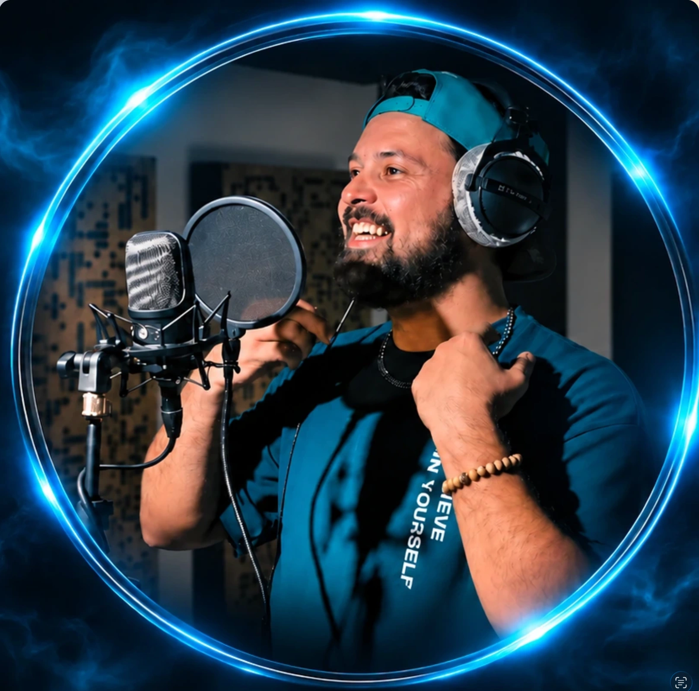

Anlat

Biyografi
1989 doğumlu FIKO, rap müzikle çocukluk yıllarında tanıştı. Limp Bizkit ve Coolio'nun “Gangsta's Paradise” parçasıyla şekillenmeye başlayan müzik ilgisi; ilerleyen yıllarda Eminem, Ceza, Sagopa Kajmer, Fuat, Defkhan, Joker ve Allame gibi sanatçıların çalışmalarından aldığı ilhamla gelişti.
2011 yılında ilk müzik kaydını gerçekleştiren FIKO, 2012 yılında ilk albümünü hazırladı. Bağımsız müzik yolculuğunu farklı çalışmalar ve projelerle sürdürerek “Basamaklar”, “İzleri Yak”, “Tabii Ki Normal” ve “Anlat” gibi yayımlanmış şarkılarını dinleyicileriyle buluşturdu.
Müzik
Yayımlanmış single'lar
Tabii Ki Normal
Tabii Ki Normal
Spotify'da ara ↗İzleri Yak
İzleri Yak
Spotify'da ara ↗Basamaklar
Basamaklar
Spotify'da ara ↗Fotoğraflar
Yakında güncellenecek
Sanatçı fotoğrafı
yakında eklenecek
yakında eklenecek
Stüdyo fotoğrafı
yakında eklenecek
yakında eklenecek
Klip karesi
yakında eklenecek
yakında eklenecek
İletişim
FIKO ile iletişime geç
İş birlikleri, projeler ve diğer talepler için.